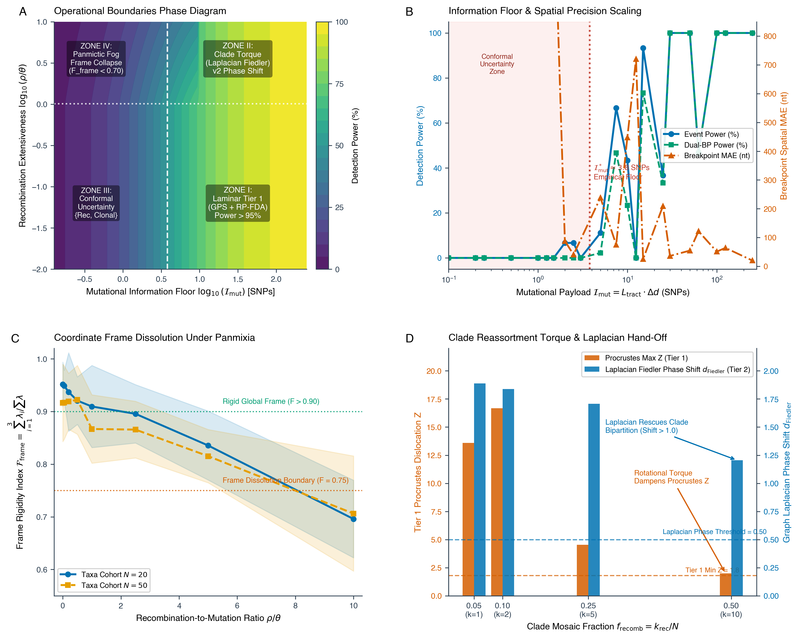

RhizAeon Track 4: Conceptual Deep-Dive & Boundary Monograph
Explanatory Architecture, Phase Space, & The Biological Horizon
1. Executive Framing: The Phylogenetic GPS
Phylogenetics has long operated under a foundational assumption: that evolution can be described by a bifurcating tree. But throughout the microbial, viral, and eukaryotic worlds, horizontal gene transfer, homologous recombination, and meiotic crossing-over systematically violate tree-like branching. Recombination shatters the single ancestral tree, producing mosaic chromosomes where different genomic segments trace back to distinct, conflicting genealogies.
For decades, computational biology has responded by either forcing the data onto an artificial tree—stretching terminal branches to absorb conflicting signals—or testing billions of sequence triplets in isolation.
RhizAeon replaces the rigid bifurcating tree with a continuous metric space embedding: the “Phylogenetic GPS.”
================================================================================
THE PHYLOGENETIC GPS IN ACTION
================================================================================
Dim 2 ▲
│ Clade P1
│ (●●●) ◀────── y_C(s) for s < Breakpoint (5' end)
│ \
│ \ FLIGHT PATH (Physical migration across space
│ \ as window traverses the breakpoint!)
│ ▼
│ (▲▲▲) ◀──── y_C(s) for s > Breakpoint (3' end)
│ Clade P2
──────┼──────────────────────────────────► Dim 1
│
================================================================================The Biologist’s Bottom Line: “Do I Have Recombination or Don’t I?”
Before delving into differential geometry, the biological diagnostic rule is simple: 1. The Clonal Genome (Parked at Home): A non-recombinant organism inherits all of its genes from the same ancestral lineage. As we scan from the 5’ end to the 3’ end of the chromosome, its position in metric space never leaves its home clade. Its trajectory remains parked inside its parental cluster, exhibiting only negligible Brownian jitter from local Poisson mutations. 2. The Recombinant Genome (In Flight): A mosaic organism inherits its 5’ flank from Parent 1 and its 3’ flank from Parent 2. When mapped continuously along the chromosome, this sequence physically takes flight: its coordinates depart Cluster 1, cruise across open Euclidean space, and touch down inside Cluster 2. 3. The Diagnostic Verdict: * If all genome trajectories stay parked inside their clusters \(\to\) The cohort is clonal (no recombination). * If any trajectory executes an unmistakable cross-manifold leap \(\to\) Recombination is confirmed. The start of the leap identifies the breakpoint, the traveling sequence is the recombinant, and the arrival/departure clusters identify the parental donors.
Biological Scope of the Engine
RhizAeon is organism-agnostic. The mathematical framework applies to any homologous sequence alignment experiencing reticulate evolution: * Viruses: RNA viruses (HIV-1, SARS-CoV-2, Hepatitis C), segmented viruses (Influenza chimeras), and large DNA viruses (Herpesviruses, Geminiviruses). * Bacteria & Archaea: Naturally transformable pathogens (Streptococcus pneumoniae, Neisseria), ICE conjugative elements, and homologous micro-conversions. * Eukaryotic Parasites & Fungi: Apicomplexans (Plasmodium falciparum drug-resistance cassettes), pathogenic fungal chimeras (Candida, Cryptococcus), and Saccharomyces inter-species hybrids. * Organellar Genomes: Plant chloroplasts and fungal mitochondrial genomes. * Targeted Eukaryotic Loci: Highly reticulate host gene arrays undergoing meiotic crossing-over or non-allelic gene conversion (Major Histocompatibility Complex [MHC / HLA], opsin arrays, immunoglobulin clusters).
2. The “Naive Trap” & Pathologies of Simpler Models
Why did it take decades to arrive at the Phylogenetic GPS? Why can’t we simply slide a window along the genome and run standard Principal Component Analysis (PCA) or Multidimensional Scaling (MDS) on each window?
The Rotating Camera Trap
Independent dimensionality reduction on local windows fails completely due to eigenspace rotational ambiguity: * An independent eigensolver on window \(s=1{,}000\) chooses its coordinate axes arbitrarily (\(R \in \mathcal{O}(k)\)) and assigns eigenvector signs with equal probability (\(\pm \mathbf{v}\)). * It is like taking a sequence of photographs of a room, but rotating the camera to a random angle for every shot. You cannot tell whether a chair moved across the room, or whether the photographer simply turned the camera. * At position 1,000, “Dimension 1” might point toward Clade A. At position 1,050, the solver flips the sign, pointing toward Clade B. Sequences appear to jump wildly across the plot simply because the coordinate frame rotated, not because the biology changed.
The Fixed Projection Lens: Bolting the Camera to the Ceiling
To measure true biological migration, we must lock the reference frame. We achieve this by using the global embedding \(Z_{\text{glob}}\) to construct a permanent linear projection lens: \[W_{\text{proj}} = H Z_{\text{glob}} (Z_{\text{glob}}^T Z_{\text{glob}})^{-1} \in \mathbb{R}^{N \times k}\] The operator \(W_{\text{proj}}\) acts as a camera permanently bolted to the ceiling, looking down at the evolutionary landscape from a fixed perspective. Local distance matrices are shone through this permanent lens, guaranteeing that “North” always points toward Clade A and “East” always points toward Clade B throughout the entire chromosome.
3. Core Architectural Engine: The Macro-Lens and the Microscope
3.1 The Low-Pass Tree (\(k = 4\))
In RhizAeon, the embedding dimension \(k\) denotes the number of spatial coordinate axes in \(\mathbb{R}^k\). * The Lower Bound (\(k \ge 3\)): Resolving unrooted quartet conflicts without geometric distortion requires the symmetry of a regular tetrahedron, which exists strictly in \(\mathbb{R}^3\). * The Upper Bound (\(k \le 4\)): Because tree metrics are additive, the eigenvalue spectrum decays exponentially (\(\lambda_1 \gg \lambda_2 \ge \lambda_3 \ge \lambda_4 \gg \lambda_5 \dots\)). Restricting the embedding to \(k=4\) captures \(75\%\text{--}85\%\) of the total distance variance—isolating the macro-phylogenetic backbone while filtering out private tip mutations and stochastic sequencing noise.
3.2 Decoupling Detection from Precision
In traditional sliding-window algorithms, window size creates an inescapable penalty: a 300 bp window can only localize a breakpoint to within \(\pm 150\text{ bp}\).
RhizAeon completely eliminates this trade-off by decoupling coarse detection from fine-scale precision: 1. The Sliding Window as a Macro-Lens (Detection): Broad windows (\(W = 200\text{--}300\text{ bp}\)) maintain high statistical power, ensuring that \(15\text{--}40\) informative mutations are captured per window to generate crisp, unmistakable velocity peaks. 2. The Profile Likelihood as a Microscope (Single-Base Precision): Once a kinetic peak flags the general neighborhood of a breakpoint, RhizAeon hands the candidate region to the Single-Base Maximum Likelihood Polisher. The polisher evaluates every individual nucleotide against candidate parental alleles, calculating exact likelihood profiles at 1-bp increments and reporting the flat uninformative plateau \([\text{CI}_{\text{left}}, \text{CI}_{\text{right}}]\).
4. Architectural Firewalls & Surgical Event Triage
4.1 The Spatial Rate Variation Firewall (L-PIR)
When a sequence passes through a hypervariable domain (e.g., the HIV-1 env V3 loop or a bacterial surface antigen), its mutation rate accelerates, causing a sharp jump in pairwise distance. * This acceleration generates a local velocity spike that could deceive a naive peak detector. * RhizAeon protects against this via the Local Phylogenetic Incongruence Ratio (L-PIR). If a sequence accelerates its mutation rate while remaining in the same clade, \(\text{L-PIR} \to 0.0\), and the peak is automatically discarded.
4.2 Surgical Event-by-Event Triage (Why Tier 2 is Not Wholesale)
A critical architectural design in RhizAeon is surgical event-level triage: * The Misconception: If a single complex or borderline event triggers Tier 2 (neural manifold / transformer refinement), does the entire alignment get shunted into Tier 2? * The Reality: No. Tier 2 triggers operate strictly on an individual candidate event basis. * When RP-FDA scans a cohort, \(95\%\) of detected macro-recombination events are clean, high-divergence crossovers resolved definitively in Tier 1. * Only the specific candidate event triggering an edge condition—such as a micro-tract (\(L_{\text{tract}} < 100\text{ bp}\)) or parentage near the mutational noise floor (\(\Delta d < 0.005\))—is dispatched to Tier 2 for localized neural polishing. The remainder of the alignment remains finalized under Tier 1.
5. Phase Space & Operational Boundaries (The 1,050 Simulation Envelope)
To establish the empirical boundaries where signal dissolves into noise, we executed an exhaustive simulation benchmark across 1,050 synthetic alignments (\(L = 3{,}000\text{ nt}\), continuous-time Markov substitution with \(\Gamma\) rate variation \(\alpha = 0.50\)):

The Four Dimensionless Control Parameters
- Mutational Payload (\(\mathcal{I}_{\text{mut}} = L_{\text{tract}} \cdot \Delta d\)): The total number of informative mutations carried by a recombinant tract.
- Recombination Extensiveness (\(\rho / \theta\)): The ratio of population recombination rate to mutation rate.
- Parental Divergence (\(\Delta d(P_1, P_2)\)): The evolutionary distance separating donor clades.
- Clade Reassortment Torque (\(f_{\text{recomb}}\)): The fraction of the population sharing a recombinant history.
The Four Operational Zones of Reticulation
================================================================================
THE FOUR OPERATIONAL REGIMES
================================================================================
Recombination
Extensiveness
▲
10.0│ ZONE IV: EXTINCTION / PANMICTIC FOG
│ (Frame Rigidity collapses: F_frame < 0.25. High FPR. Hand-off to LD).
│
2.5┼───────────────────────────────────────────────────────────────────────────
│ ZONE II: CLADE TORQUE / LAPLACIAN HAND-OFF
│ (Frame rotates under macro-swaps; Fiedler phase shift resolves clades).
│
0.5┼───────────────────────────────────────────────────────────────────────────
│ ZONE I: LAMINAR TIER 1 │ ZONE III: CONFORMAL UNCERTAINTY
│ (Crisp Procrustes peaks; │ (Tracts < 3.8 SNPs; Conformal sets
│ Dual-BP Power > 95%; MAE < 2 nt) │ include Clonal Null; Tier 2 active)
0.0┴──────────────────────────────────────┼────────────────────────────────────►
10^2 bp 10^3 bp 10^1 bp Mutational Payload
(I_mut > 15 SNPs) (I_mut < 3.8 SNPs)
================================================================================The Hard Physical Boundaries:
- The Mutational Information Floor (\(m \approx 3.8\) SNPs): When the mutational payload \(\mathcal{I}_{\text{mut}} < 3.8\) SNPs, detection power drops below \(50\%\) regardless of algorithm. Below this threshold, statistical inference is impossible: there simply are not enough physical mutations separating the parent from the child to establish a template switch.
- The Panmictic Frame Collapse (\(\rho / \theta > 2.5\)): When recombination becomes extremely dense (\(\rho / \theta > 2.5\)), the Frame Rigidity Index: \[\mathcal{F}_{\text{frame}} = \frac{\lambda_1 + \lambda_2 + \lambda_3}{\sum_{i=1}^N \lambda_i}\] collapses from \(\mathcal{F}_{\text{frame}} \approx 0.85\) down below \(0.25\). Under panmixia, no genome possesses a stable majority parentage; the chromosome is a chaotic patchwork of fragments. RhizAeon flags this condition and hands the dataset off to population linkage-disequilibrium (LD) estimators.
- The Laplacian Hand-Off for Clade Torque: When an entire clade reassorts (\(f_{\text{recomb}} \ge 0.25\)), the global coordinate frame experiences structural torque. RhizAeon activates the Normalized Graph Laplacian Fiedler Vector (\(\mathbf{v}_2(s)\)), tracking directional phase shifts \(d_{\text{Fiedler}}(s)\) to maintain robust clade separation even when Procrustes strain saturates.
6. The Biological Horizon: Complex Mosaics, Convergent Reticulation, and the Evolutionary Sieve
6.1 Formation Flights and Bundled Streamlines (Recombinant Clades / CRFs)
In real-world epidemics, an ancestral recombinant frequently establishes sustained transmission, generating hundreds or thousands of progeny (e.g., HIV-1 CRF01_AE, CRF02_AG, or SARS-CoV-2 XBB). * All progeny inherit the identical breakpoint junction \(s^*\). * In metric space, these genomes travel as a tight, coordinated “formation flight” (or streamline bundle) around the clade consensus trajectory. * Rather than confusing the algorithm, population expansion dramatically increases detection power: the Poisson substitution noise of individual sequences cancels out (\(\mathcal{O}(1/\sqrt{M})\)), producing a razor-sharp consensus kinetic peak.
6.2 Multi-Stop Journeys & Complex Mosaics (Recombinants of Recombinants)
When a recombinant lineage subsequently recombines with a third lineage (e.g., an HIV-1 Unique Recombinant Form formed between CRF01_AE and Subtype B), it does not hover in an intermediate fog. Because biological recombination is a discrete copy-choice template switch, the trajectory executes piecewise linear leaps: tracking Parent 1 across interval 1, leaping to Parent 2 across interval 2, and leaping to Parent 3 across interval 3.
6.3 Convergent Recombination vs. Shared Common Ancestry
When two distinct isolates share an identical mosaic block (e.g., \(A-B-A\)), did they inherit it from a single ancestral crossover event, or did they recombine independently at the same hotspot? RhizAeon resolves this by examining intra-tract polymorphic divergence: * Shared Common Ancestry: The recombinant segments share identical private mutations accumulated since the founding event (\(\pi_{\text{shared}} \approx 0\)). * Convergent Independent Crossovers: The recombinant segments match the broader population diversity of the donor clade (\(\pi_{\text{tract}} \gg 0\)), demonstrating independent template switches at a common physical hotspot.
6.4 The Evolutionary Sieve: Bridging Reticulation and Selection
In bacterial pathogens (S. pneumoniae, N.
meningitidis), observed recombination patterns are governed by two
opposing evolutionary forces: \[\mathcal{S}_{\text{sel}}(s) =
\frac{\lambda_{\text{obs}}(s)}{\lambda_{\text{mech}}(s)}\] 1.
The Mechanistic Baseline (\(\lambda_{\text{mech}}(s)\)): The
biophysical frequency of DNA strand exchange, dictated by sequence
identity, replication origin distance (\(d_{\text{ori}}\)), and species-specific
recombination motifs (e.g., Chi octamers 5'-GAGAATGA-3').
2. The Observed Recombination Intensity (\(\lambda_{\text{obs}}(s)\)): The
rate inferred by RhizAeon along the chromosome. 3. The Selective
Sieve (\(\mathcal{S}_{\text{sel}}\)): *
Purifying Deserts (\(\log_2
\mathcal{S}_{\text{sel}} < -1.5\)): Loci with high
mechanistic crossover rates but zero observed recombinants. These mark
essential, highly conserved macromolecular complexes (e.g., ribosomal
operons, recA, RNA polymerase) where foreign DNA imports cause
lethal epistatic disruption. * Adaptive Spikes (\(\log_2 \mathcal{S}_{\text{sel}} >
+2.0\)): Loci where observed recombination vastly
exceeds the biophysical baseline. These pinpoint positive diversifying
selection driving antigenic diversity and clinical antimicrobial
resistance (e.g., pbp2x, pbp1a, cps capsule
loci in S. pneumoniae).
By coupling RhizAeon’s linear-time reticulation engine with HyPhy’s codon-level selection analyses (\(dN/dS\), MEME), researchers can systematically separate physical template switching from positive evolutionary selection across entire bacterial pangenomes.